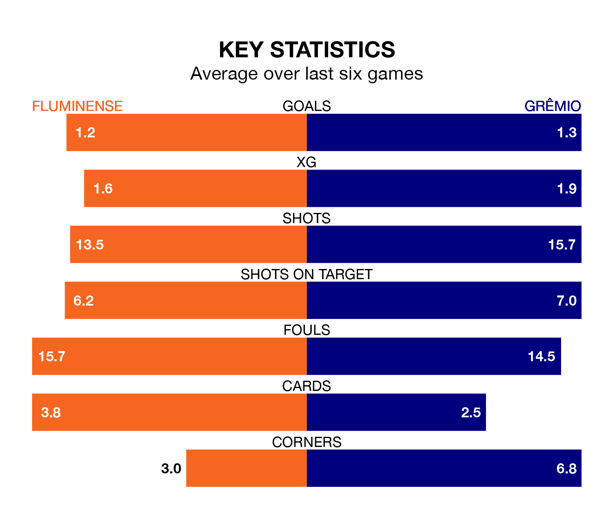

Grêmio travel to Fluminense on early Thursday in Serie A.
The visitors come into the game on the back of a win in their last match, having beaten Vasco da Gama 1-0 at home, with a goal from Luis Suárez.
Fluminense, meanwhile, lost their last match, 1-0 against Palmeiras.
With 60 goals in 37 games so far this season, Grêmio are the league's second-highest scorers with 1.6 goals per game. But they are conceding more than average too, letting in 54 goals at a rate of 1.5 per game.
Fluminense are also above average scorers, with 1.3 goals per game, compared to a league average of 1.2. They have conceded 1.2 goals per game.
In the last 10 years, Fluminense and Grêmio have played each other on 21 occasions. Fluminense won four of them, Grêmio 12, and they drew five times.
On average, Fluminense scored 0.6 goals and Grêmio 1.1 in those matches.
Their last meeting was on August 13, when Grêmio won 2-1 at home.
In Suárez Díaz, the visitors have one of the league's most on-form strikers so far this season. He has notched 15 goals in 31 appearances, to sit third in the scoring charts.
His goal rate of one every 181 minutes is quicker than that of Germán Cano, the home team's top scorer with a goal every 237 minutes, and a total of 10 goals in 29 games.
Grêmio are fourth in the table after 37 games, of which they have won 20 and drawn five, earning 65 points.
Fluminense are four places behind Grêmio in eighth, with 16 wins and eight draws putting them on 56 points.
Fluminense are in reasonable form in Serie A, with three wins and two draws from their last six games.
With four wins and two losses over that period, the away side's form is slightly better – they have taken 12 points from 18, compared to the hosts' 11.
